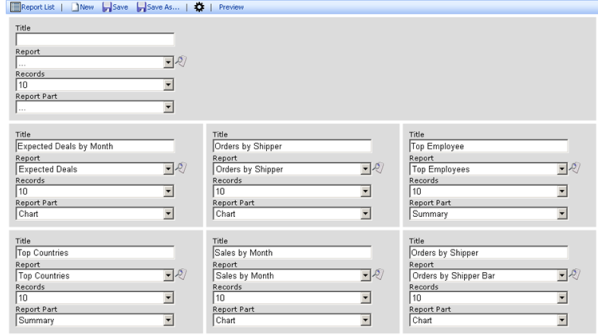
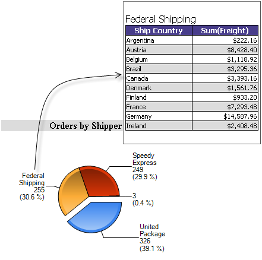

Izenda Dashboards delivers an instant snapshot of relevant data in a single visual view. Dashboards empower and simplify the user by delivering everything they need to see in once place. Just like Izenda Reports, dashboards can be created and customized by non-technical business users over a browser. Users can even save their own variations.
Dashboard Designer Screenshot
The dashboard designer allows users to create and customize dashboards, building them with parts of pre-existing reports. It is user friendly and easy to use with a clean dropdown driven interface.
Izenda dashboards leverages Izenda reports for creating dynamic reporting content quickly and easily. Once reports are created, individual report parts can be placed inside the layout of the dashboard designer. The dashboard extensions enable additional features in the Izenda Reports Designer for enhanced functionality.
Izenda dashboards is a separate product. Please contact sales@izenda.com or your Izenda representative for details.
To add dashboards support to an exsiting Izenda Reports installation, add DashboardDesigner.aspx [link] to your application and get a dashboard key from Izenda support at support@izenda.com. Izenda dashboards requires upgrading to version 6.0 or above of the Izenda dll.
Dashboards may be customized via the DashboardsCss setting. Alternatively, the ReportPart controls may be used in a custom aspx page.
Charts shown in the dashboard also can be set to popup additional information when the user hovers over them as shown below.
Izenda's dashboard is highly customizable. The ReportPart class may be used to create custom dashboard layouts and embed other content.